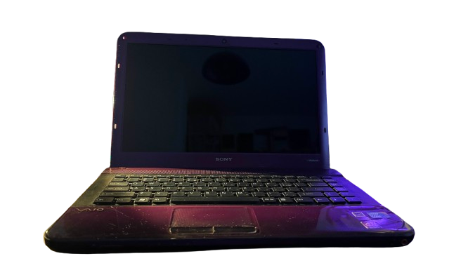
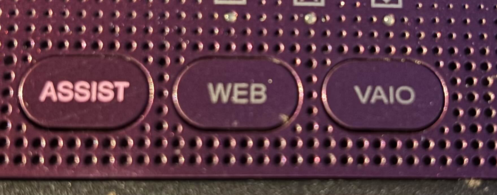
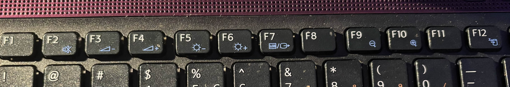

Name : Sony Vaio PCG-61211M
CPU : Mobile 1th gen i3
GPU : Dont Know
RAM : 4Gb
CD/DVD : yes
FDD : no
Dial-Up : no
Ethernet : yes
Wifi : yes
Functional Battery : yes
Additional Buttons : yes
Additional Buttons List : ASSIST, WEB, VAIO, (also has wifi switch on the side)
Function Buttons : yes
Function Buttons List : F2 - MUTE, F3 - Volume Down, F4 - Volume Up, F5 - Brightness Down, F6 - Brightness Up, F7 - Change Video Output, F9 - Zoom Out, F10 - Zoom In, F12 - Battery Saver?
  